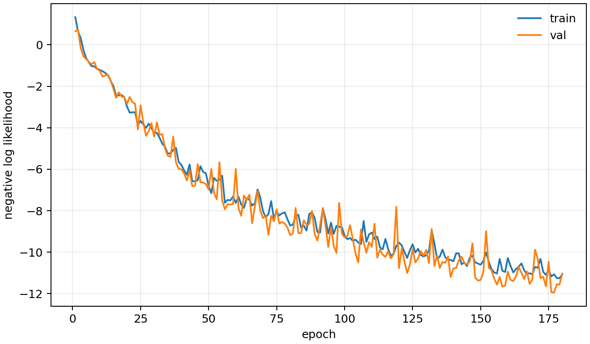
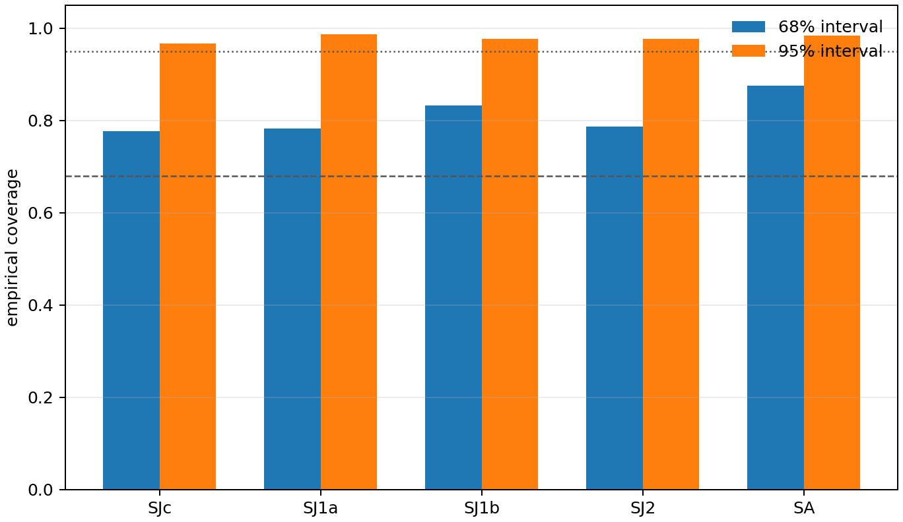
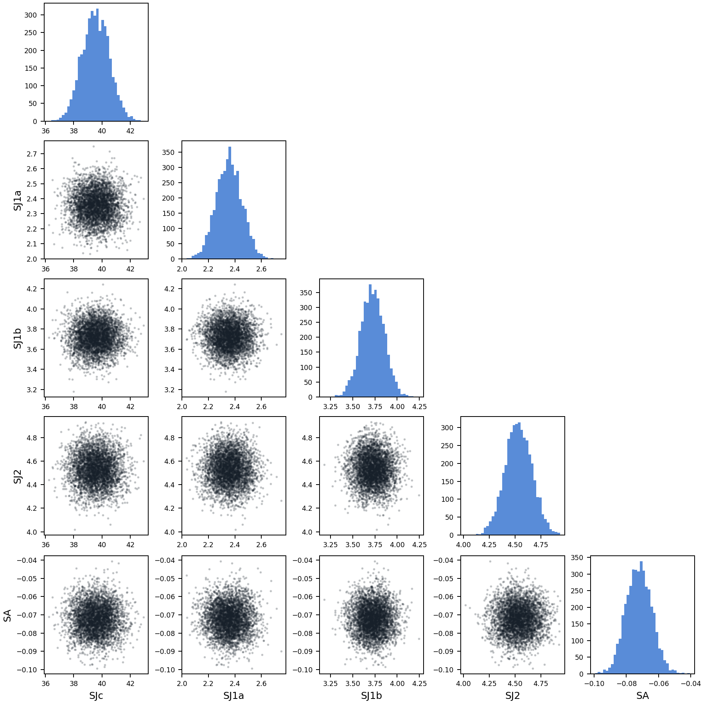

LNO327 CNN 后验推断报告
这一步不只输出一个参数点，而是输出参数分布。diagonal Gaussian 用来检查不确定性、coverage 和参数耦合。
| 数据集 | /home/linux/work/ins-cnn/data/lno327_inverse_4d_wide_fwhm10_n2048_q160_e180_h81_k121_l5.h5 |
|---|---|
| 模型 | diagonal Gaussian, components=1, hidden=96, embedding=192 |
| 训练 | epochs=180, best_epoch=177, batch=48, AMP=True |
| 测试误差 | mean range MAE = 1.89%, MAE = 0.232 meV |
| Coverage | 68% overall = 81.1%, 95% overall = 97.8% |
| 耗时 | 0.68 h |
每个参数的误差和可信区间覆盖率
| 参数 | MAE | RMSE | R2 | MAE/范围 | 68%覆盖 | 95%覆盖 |
|---|---|---|---|---|---|---|
| SJc | 0.87 | 1.248 | 0.977 | 2.90% | 77.6% | 96.7% |
| SJ1a | 0.07969 | 0.1069 | 0.995 | 1.38% | 78.3% | 98.7% |
| SJ1b | 0.1059 | 0.1425 | 0.994 | 1.42% | 83.2% | 97.7% |
| SJ2 | 0.09929 | 0.1299 | 0.997 | 1.24% | 78.6% | 97.7% |
| SA | 0.004987 | 0.01126 | 0.956 | 2.51% | 87.5% | 98.4% |
论文参考谱的后验
这里显示 paper reference spectrum 输入后得到的参数后验。宽度越大，说明谱图对该参数约束越弱。
| 参数 | mean | std | q16 | q84 |
|---|---|---|---|---|
| SJc | 39.56 | 0.9611 | 38.57 | 40.5 |
| SJ1a | 2.356 | 0.09789 | 2.259 | 2.454 |
| SJ1b | 3.724 | 0.1318 | 3.594 | 3.855 |
| SJ2 | 4.534 | 0.1298 | 4.407 | 4.664 |
| SA | -0.07218 | 0.008038 | -0.08035 | -0.06413 |
可视化


